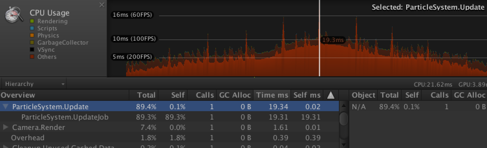
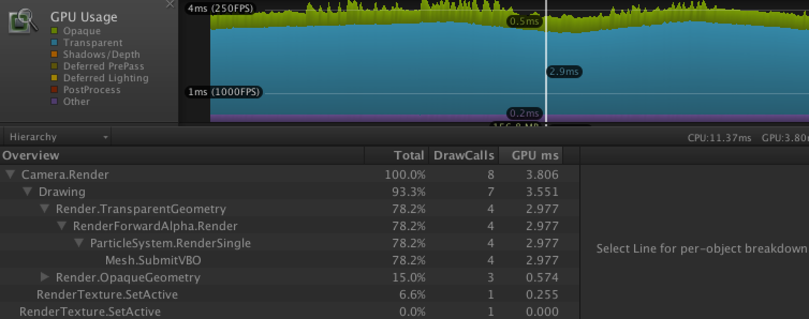
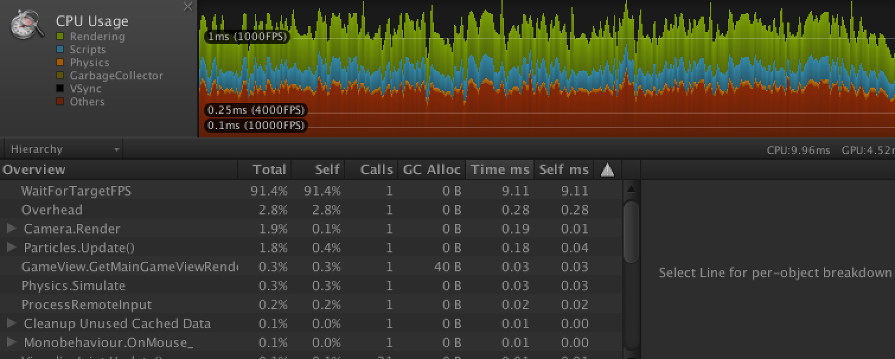
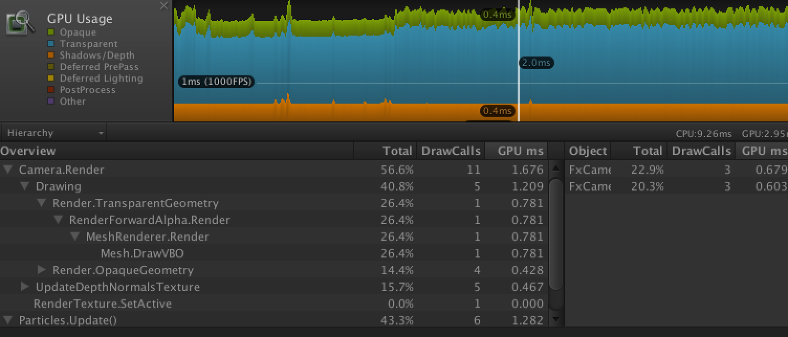
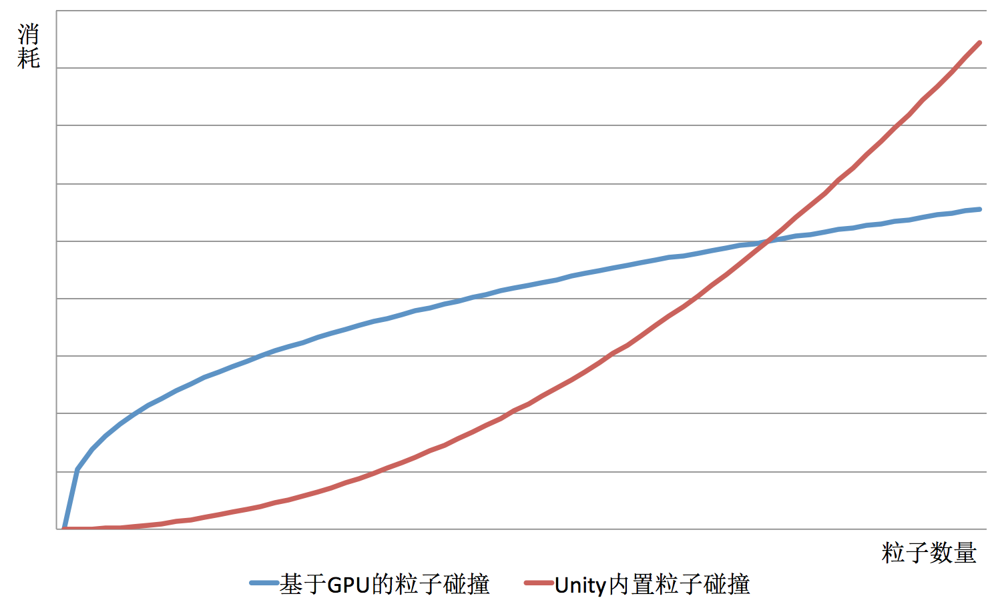

基于 GPU 的粒子碰撞（总结篇）
2016-7-2
RenderTexture 的初始化
RenderTexture 刚被创建出来的时候是需要赋予其每一个像素点一个初始值的（如果你不关心初始值，就无所谓了），具体赋予什么值根据自己的需要。但是有一点必须注意，RenderTexture 默认的初始值是一个随机值，是显存中上次残留的值，即使你在开发环境中不赋予其初始值也能每次都得到一块黑色的RenderTexture（这和高级编程语言是不同，倒是类似于 C 语言）。所以你的计算依赖初始值的话，那么请一定要注意这一点。
RenderTexture 参数设置
在本应用中当创建了一个 RenderTexture 后，记得把其过滤模式设置为点过滤模式（FilterMode.Point），以防影响到纹理采样的结果。
RenderTexture 格式为 RenderTextureFormat.ARGBFloat。
RenderTexture 关闭 mipmaps。
RenderTexture 各项异性等级为 0。
RenderTexture 色彩空间为线性空间，避免 Gamma 矫正。
如何创建粒子 Mesh
在本应用中我们使用程序代码创建粒子 Mesh，一张 128x128 的 RenderTexture 支持 16384 个粒子。下面的代码是用来创建 16384 个粒子的 Mesh。
List<Vector3> mvertices = new List<Vector3>();
List<Color> mcolors = new List<Color>();
List<Vector2> muvs = new List<Vector2>();
List<Vector4> mtangents = new List<Vector4>();
List<int> mtriangles = new List<int>();
for(int i = 0; i < 16384; ++i)
{
mvertices.AddRange(new Vector3[]{ new Vector3(-1, 1, 0), new Vector3(1, 1, 0), new Vector3(1, -1, 0), new Vector3(-1, -1, 0) });
mcolors.AddRange(new Color[]{ new Color(0, 1, 0), new Color(1, 1, 0), new Color(1, 0, 0), new Color(0, 0, 0) });
muvs.AddRange(new Vector2[]{ new Vector2(0, 1), new Vector2(1, 1), new Vector2(1, 0), new Vector2(0, 0) });
// rtSize 为 128
int uv_y = i / rtSize;
// 利用 tangent 来存储额外的数据
// tangent.xy 表示采样 RenderTexture 时所使用的 uv 值（这里并不是使用 0 到 1，而是 0 到 纹理尺寸，在着色器中再进行转换）
// tangent.zw 表示每个粒子间的间隔
Vector4 tan = new Vector4(i - rtSize * uv_y, uv_y, i - uv_y * rtSize, uv_y);
mtangents.AddRange(new Vector4[]{ tan, tan, tan, tan });
mtriangles.AddRange(new int[]{ offset + 0 + i * 4, offset + 1 + i * 4, offset + 2 + i * 4, offset + 0 + i * 4, offset + 2 + i * 4, offset + 3 + i * 4 });
}
mesh = new Mesh();
mesh.vertices = mvertices.ToArray();
mesh.colors = mcolors.ToArray();
mesh.uv = muvs.ToArray();
mesh.tangents = mtangents.ToArray();
mesh.triangles = mtriangles.ToArray();
相机视锥体裁切
相机会对任何被渲染的物体根据其包围盒大小预先进行一个视锥体裁切的操作，减少传送到绘图管线中的数据量，提高性能。而我们程序创建出来的粒子 Mesh 的包围盒是不确定的，所以需要手动根据具体的使用场景设置一下。
// 我这里偷懒了:-)
// 实际情况需要根据需要设置，提高渲染性能
mesh.bounds = new Bounds(Vector3.zero, new Vector3(9999, 9999, 9999));
RenderTexture 读写
在这里粒子碰撞的程序中，使用了两张 RenderTexture，positionRT 和 velocityRT。在着色器代码中从 positionRT 读取数据，并写入 positionRT 中的同一个 texel 中，velocityRT 也是如此。类似读写同一个 Texel 的操作可能在某些硬件上会出现问题。所以应该使用类似双缓冲的方式。原因详见 GLSL Common Mistakes 和 Feedback Loops。
Tile-Based Deferred Rendering
如果不明白这是什么，请看我以前的一篇文章。如果不对 RenderTexture 标记为 DiscardContent，在这种渲染架构的设备上回有性能消耗。但由于 RenderTexture 中数据是要保留的，不能丢弃，所以这种效果无法避免。好在我们所使用的 RenderTexture 尺寸非常小，一张 128x128 的纹理就能表示 16k 个粒子。
与 Unity 内置的粒子碰撞性能对比
测试场景是 16000 左右个粒子碰撞。

Unity 内置的粒子碰撞，CPU消耗。
CPU 时间最高达到了 21.62 毫秒。
FPS 最高为 100，最低为 200。
碰撞到的粒子数量越多消耗越大。

Unity 内置的粒子碰撞，GPU消耗。
GPU 时间最高达到了 3.8 毫秒。
FPS 最高为 250 左右。
从展开的列表中可以看到，动态的 VBO 消耗相当大。

基于 GPU 的粒子碰撞，CPU消耗。
FPS 为 1000。可以看出 CPU 没有任何的负担。

基于 GPU 的粒子碰撞，GPU消耗。
GPU 时间为 2.95 毫秒。比 Unity 内置的粒子碰撞快了 1ms。
FPS 比 Unity 内置的粒子碰撞提高不少，从图形上估计至少提高了 100fps。

随着粒子数量的不断增加，消耗示意图（此图仅为示意图，并非实测数据绘制）